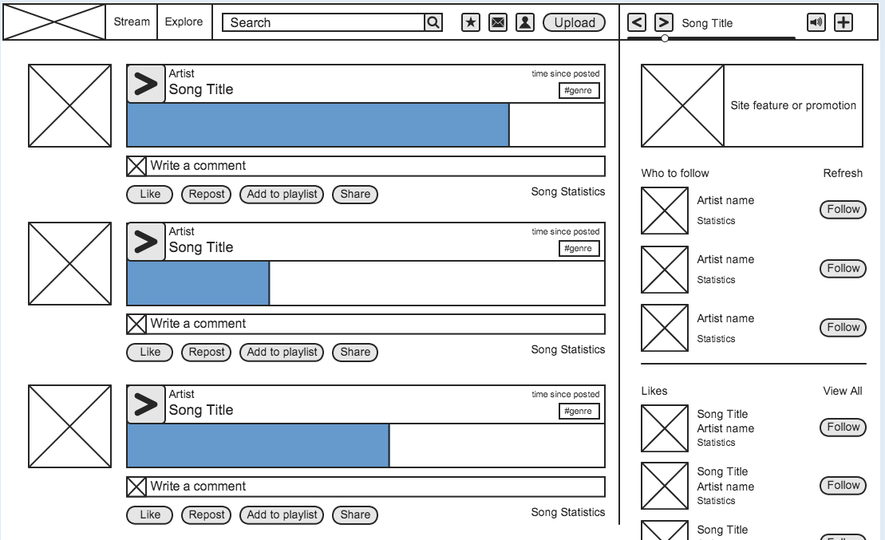
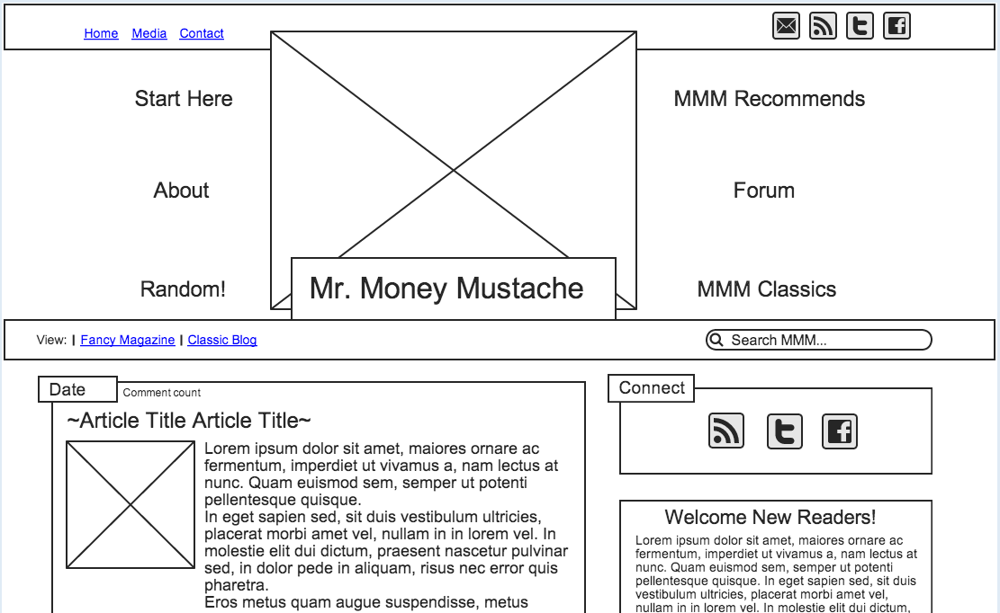

Medium is designed to provide an optimal reading environment. This means they had to overcome the challenges of reading online. Most other websites don't consider this because it is not their primary focus, however Medium is designed around distraction-free presentation.
SoundCloud is designed to solve the problem of new music discovery while providing a casual listening experience. The visual challenge includes making it easy to listen to and discover new music as well as create playlists for later playback.

Mr. Money Mustache is designed to encourage and inspire people to live a more fulfilling life while also being money wise to set themselves up for financial independence. 